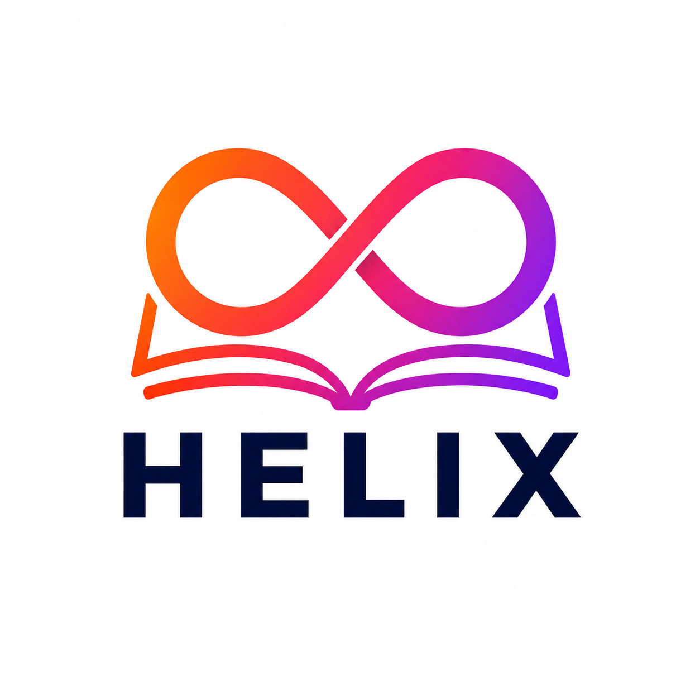

Presenter stijlverkenning
Werkbalk opties die dichter bij HELIX liggen
Tijdelijke keuzeplaat voor de Presenter-werkbalk. De kleuren zijn afgeleid van de app-tokens en het logo: oranje, roze, paars, navy, zachte peach/lavendel/pink surfaces, Inter en Sora.
HELIX oranje
HELIX roze
HELIX paars
HELIX navy
Sora + Inter
Categorie 1
15 kleurstijlen voor de Presenter-werkbalk
De eerste 10 zijn direct passend bij de huidige app. De laatste 5 zijn bewust vrijer, maar nog steeds herleidbaar naar HELIX.
Categorie 2
15 lettertype en buttonstijl variaties
Deze previews gebruiken dezelfde kleurset, maar variëren in knopvorm, dichtheid, typografie, iconen en positioneringsgevoel.